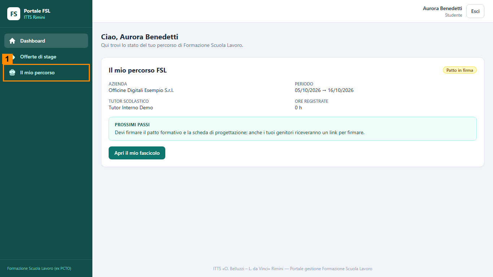
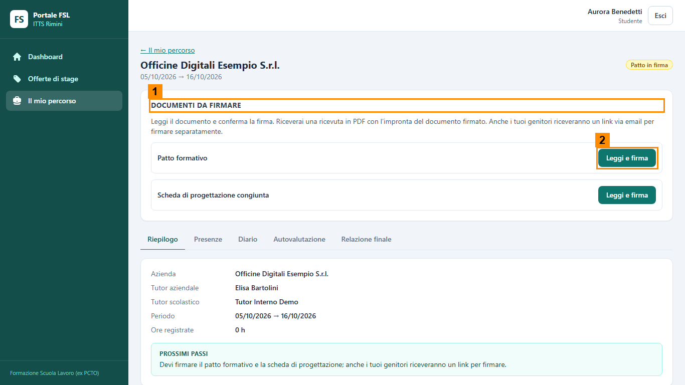
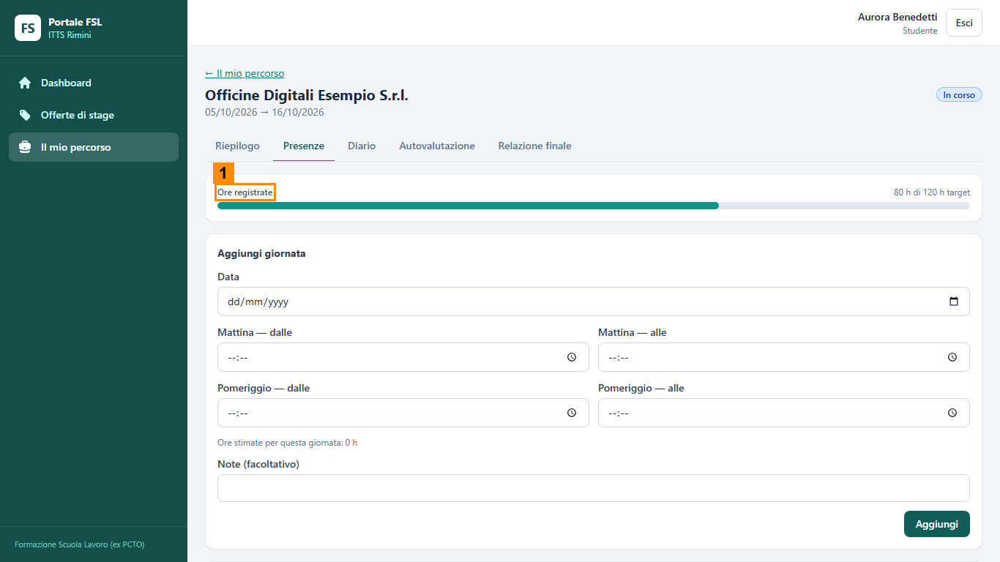
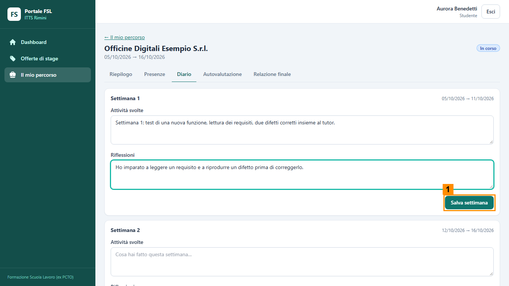

Scheda del ruolo: Studente
Obiettivo
Sei lo studente della pratica. Firmi il patto formativo e la scheda di progettazione, poi durante lo stage compili il registro presenze e il diario di bordo; alla fine consegni autovalutazione, relazione e diario.
Cosa fare, passo per passo
- Entra con l'account di prova che ti viene consegnato (non con il tuo account personale). Lascia spenta la casella Ricordami per 30 giorni.
- Nel menu a sinistra hai Dashboard, Offerte di stage e Il mio percorso (1 nell'immagine). Il ruolo di studente arriva da solo al primo accesso.
- Quando il Tutor interno ha inviato i link di firma, apri Il mio percorso. Nel riquadro Documenti da firmare (1 nell'immagine seguente) premi Leggi e firma sul patto formativo (2) e poi sulla scheda di progettazione.
- Leggi il documento, spunta la presa visione e firma. Scarica la ricevuta.
- Quando lo stage è avviato, scheda Presenze: Aggiungi giornata e scrivi entrata e uscita di mattina e di pomeriggio. Fai quattro giornate, due per settimana, come nel copione. Le ore totali (1 nell'immagine successiva) si calcolano da sole.
- Scheda Diario: una scheda per settimana, con «Attività svolte» e «Riflessioni». Premi Salva settimana (1) per ciascuna.
- Scheda Autovalutazione: rispondi alla griglia e premi Consegna autovalutazione.
- Scheda Relazione finale: scrivi cinque righe sul lavoro svolto e consegnala.
- Alla fine, nella scheda Diario, cerca il modo di consegnare il diario. Se non lo trovi, segnalalo sul foglio «Cosa cambierei».




Cosa controllare
- Se i documenti da firmare non compaiono, aspetta che il Tutor interno abbia inviato i link.
- Nel registro presenze le ore sono la somma delle quattro giornate.
- Dopo il salvataggio le due settimane del diario sono compilate.
- Il tutor aziendale può confermare una giornata solo dopo che l'hai scritta; dopo la conferma non si modifica più.
- Hai premuto Esci al termine.